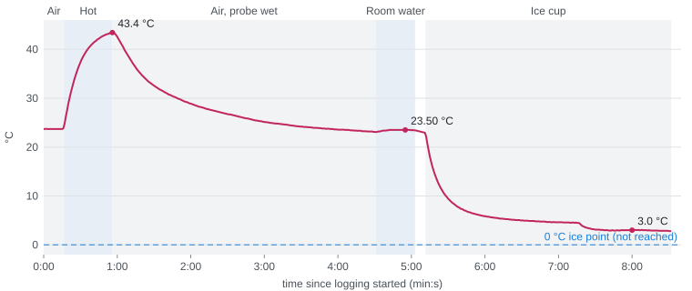
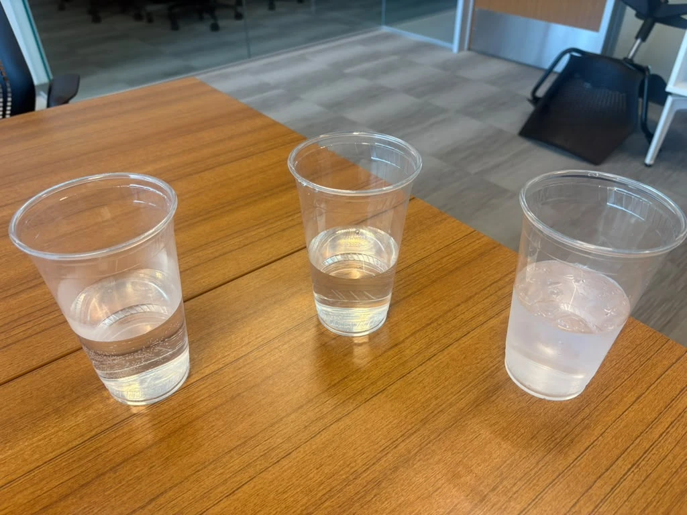

S.C.O.U.T. Electrical Subsystem · Test Report
| Report number | SCOUT-E-TR-002, Rev A | Status | Draft for review |
| Test date | 2026-11-03, 12:42–12:51 (logged 20:42:49–20:51:21 UTC) | Location | Not recorded |
| Tested by | Isabella Rodriguez | Reviewed by | Dr. Shoba Krishnan; Dr. Jes Kuczenski |
| Test plan | Test 3c water step test, written 2026-11-03 before the run (procedure in §2) | Tracking | SCO-259, SCO-258; repo record RR-26 |
| Overall result | PARTIAL · 3 of 3 pass/fail checks passed · response time measured (≈ 12–13 s) · ice point not reached (TC-05 inconclusive) | ||
First test of the DS18B20 probe in water. TR-001 showed the probe reads and responds in still air; the buoy measures water, where heat moves into the probe far faster. This test checks that the probe and logging chain work while the tip is wet, measures how fast the reading follows a step in water temperature, shows how steady it is in a still bath, and was meant to give the first absolute check against the ice point (0 °C).
Not tested this session: absolute accuracy against a reference thermometer (none available); the ice point (the ice cup did not reach 0 °C, TC-05); the flight firmware or the 30-minute sample cycle; salt water; depth or pressure.
| Hardware under test | Same stack as TR-001: Feather M0 RFM95 (3178) with Adalogger FeatherWing (2922); DS18B20 waterproof probe (381) on D12 with 4.7 kΩ pull-up. Powered from laptop USB, 3.3 V from the Feather regulator. |
| Wiring | Unchanged from TR-001 (red → 3V3, blue → GND, yellow → D12). The heat-shrink splice and the breadboard stayed dry, away from the cups. |
| Software | Bench sketch scout_t3c_water (new for this test): 12-bit, one reading per second, CSV t_s,temp_c,mark; text typed over USB is written in the mark column. Logged in Microsoft Edge by the bench page scout-live-temp.html (Web Serial, 115200 baud), which plots the reading live and saves the CSV with a PC timestamp on every line. Toolchain as in TR-001; versions not re-recorded. |
| Water baths | Three thin clear disposable plastic cups, each about a third to half full, all tap water: hot, room temperature, and a few ice cubes floating in mostly room-temperature water (photo, Figure 2). Only the stainless-steel tip was submerged. |
| Test equipment | Laptop (power, upload, logging). No reference thermometer. |
| Procedure as planned | Air 1 min → ice cup 4 min, stirred → hot 3 min → cold 3 min → air 2 min, typing a mark at each move. Pass mark set before the run for the ice point: 0.0 ± 0.5 °C (DS18B20 datasheet accuracy). Response time and stability were to be measured; no pass mark was set for them. |
| Procedure as run | Air → hot (≈ 40 s) → out into air until near room temperature → room-temperature water → ice cup, stirred once when it had settled near 4.5 °C. No marks were typed (hands busy); event times are taken from the trace (§5, D-01). |
| ID | Test | Requirement | Pass criterion | Measured | Result |
|---|---|---|---|---|---|
| TC-01 | Logging chain with the tip wet | N1, M7 | One reading per second; no dropouts | 513 readings over 512 s, PC timestamps 0.994–1.005 s apart; 0 dropouts (no NaN or −127) | PASS |
| TC-02 | Resolution in water | M2 | Every reading on a 0.0625 °C step | 513 of 513 on the 0.0625 °C grid | PASS |
| TC-03 | Still-bath stability | M1 | Within 2 steps (0.125 °C) in a settled bath | Room water: 23.50 °C, span 0.0625 °C (285–301 s). Ice cup: 3.01 °C, span 0.125 °C (470–492 s) | PASS |
| TC-04 | Step response in water | N1, M7 | Measure τ (63 % time); no pass mark set | Heating step τ ≈ 12 s (11.6–12.1 s); cooling step τ ≈ 13 s (13.2 s). Still air (TR-001): 150–170 s | MEASURED |
| TC-05 | Ice point | M1 | 0.0 ± 0.5 °C in a stirred, packed ice bath | Settled near 3.0 °C, still falling at the end (2.81 °C); the bath was not at 0 °C | INCONCLUSIVE |
PASS: all criteria met. MEASURED: a number recorded with no pass mark set before the run. INCONCLUSIVE: the test condition was not met, so the result says nothing about the probe. TC-03's pass mark was not written before the run; it is TR-001's "steady" criterion applied to water. Requirement IDs are the needs (N) and metrics (M) in the Project Specifications, as in TR-001.

Figure 1. The whole run, one reading per second. Segments are inferred from the trace (§5, D-01). The dashed line is 0 °C, which the ice cup did not reach.
Procedure. Uploaded scout_t3c_water, closed the Arduino Serial Monitor, opened scout-live-temp.html in Edge, connected to the Feather's COM port, ran the baths, and saved the CSV with the page's Download CSV button.
Observations. 513 lines from 0 to 512 s, one per second; the PC timestamps are 0.994–1.005 s apart. Over the run the board counted 512 s while the PC counted 511.3 s, so the bench sketch's timer runs about 0.13 % fast against the PC; that does not affect these results. No line is missing a reading. This is also the first use of the live page and the 1 Hz sketch, and both worked as intended.
Observations. Every reading is a whole multiple of 0.0625 °C, so the probe stayed at 12-bit resolution throughout, wet and dry (M2, as in TR-001).
Observations. In room-temperature water the reading held at 23.50 °C, with a single reading one step lower, for the 17 s before the probe was moved. In the ice cup, between the stir and the end, it held 2.94–3.06 °C over 23 s while drifting slowly down with the bath. Both windows are shorter than the planned last minute of each bath, because the dips were shorter than planned (§5, D-02).
Method. τ is the time for the reading to cover 63.2 % of the step, from the moment of immersion, read by linear interpolation between readings. Heating step: from 23.69 °C at 16.5 s toward the hot water's temperature, taken as 43.5–44.0 °C (the probe came out at 56 s while still rising slightly, peak 43.44 °C). Cooling step: from 22.94 °C at 311.5 s toward the 4.5 °C plateau at 425–436 s.
Observations. τ ≈ 11.6–12.1 s heating and ≈ 13.2 s cooling, about 12 times faster than the 150–170 s measured in still air in TR-001, as expected from the much higher heat transfer in water. Both are well under the 30-minute sample interval (M7), so the probe's lag does not limit the buoy's water reading. After the hot dip, the wet probe cooled in air with τ ≈ 48 s and settled at 23.06 °C, below the 23.69 °C starting air reading: evaporation from the wet tip cools it. That value is not comparable to TR-001's dry still-air figure.
Observations. The ice cup held a few cubes floating in room-temperature tap water, not the packed crushed ice the plan called for. The reading levelled at about 4.5 °C, dropped to about 3.0 °C when the cup was stirred at ≈ 437 s, and was still falling at the end (3.01 → 2.87 °C over the last 40 s). The water around the tip was layered and still cooling, so the 3 °C plateau is the bath's temperature, not a probe error, and the probe's accuracy at 0 °C remains unchecked.

Figure 2. The three baths: hot (left, condensation above the waterline), room temperature (middle) and the ice cup (right), which held only a few floating cubes.
| ID | Type | Description and root cause | Action taken | Status |
|---|---|---|---|---|
| D-01 | Deviation | No event marks typed during the run; the operator's hands were busy moving the probe. Event times were taken from the trace (turns in the curve) and the operator's account, good to about ±1 s. | Timeline recorded in the run notes. Next time a second person marks, or use the page's keyboard keys (A, I, H, C). | Closed |
| D-02 | Deviation | Order and dwell times differed from the plan: hot first and only ≈ 40 s; a wet-air cool-down added; no separate cold-tap bath; room water ≈ 30 s. | Results are reported for the steps that ran. τ for heating carries a range because the hot dip ended before full settling. | Closed |
| D-03 | Deviation | Ice cup was ice floating in room-temperature water, not packed crushed ice with cold water, and was stirred only once. | Repeat: cup packed full of crushed ice, a little cold water, stirred from the start until the reading stops changing. | Open |
| D-04 | Limitation | No reference thermometer (carries TR-001 D-02). | Ice-point repeat (D-03); a reference thermometer reading in each bath when one is available (SCO-259). | Open |
| Role | Name | Signature | Date |
|---|---|---|---|
| Test engineer | Isabella Rodriguez | ||
| Reviewer | Dr. Shoba Krishnan | ||
| Reviewer | Dr. Jes Kuczenski |
This folder (hardware/test/evidence/rr-26-2026-11-03/, repo record RR-26): data/test3c-water-steps.csv (the 513 readings as saved by the bench page, unedited), charts/c-water-steps.svg (Figure 1, drawn from that file), test3c-setup-cups.webp (Figure 2) and test3c-run-notes.md (inferred timeline and calculations). Sketch hardware/test/bench-sketches/scout_t3c_water/; bench page hardware/test/tools/live-temp-monitor.html.
AI use: Claude (Anthropic) wrote the bench sketch and logging page, analysed the CSV and drafted this report from the operator's account; the test was run and the account given by the test engineer.